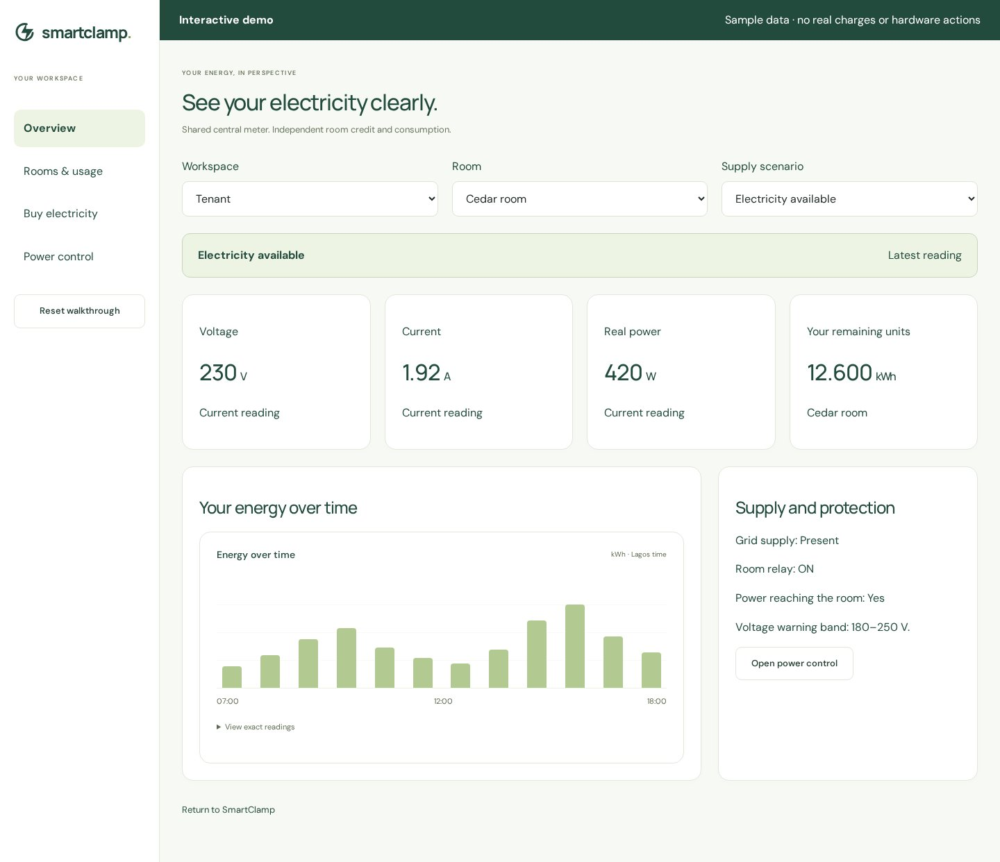
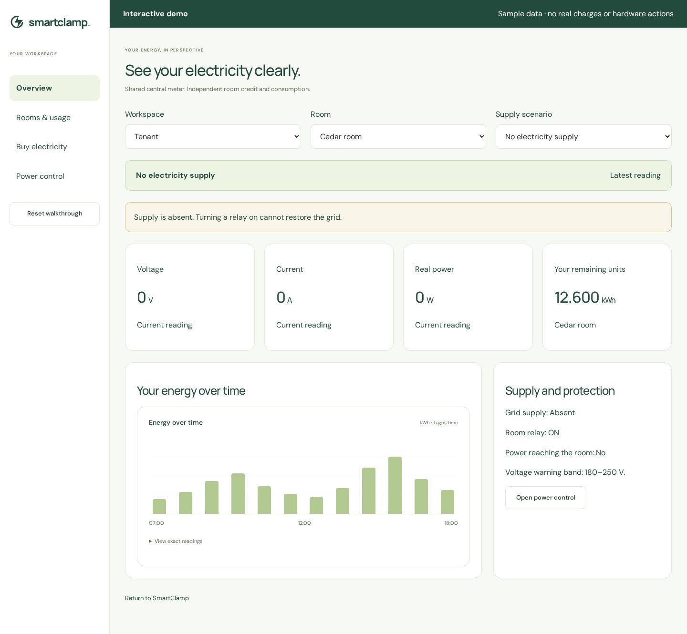
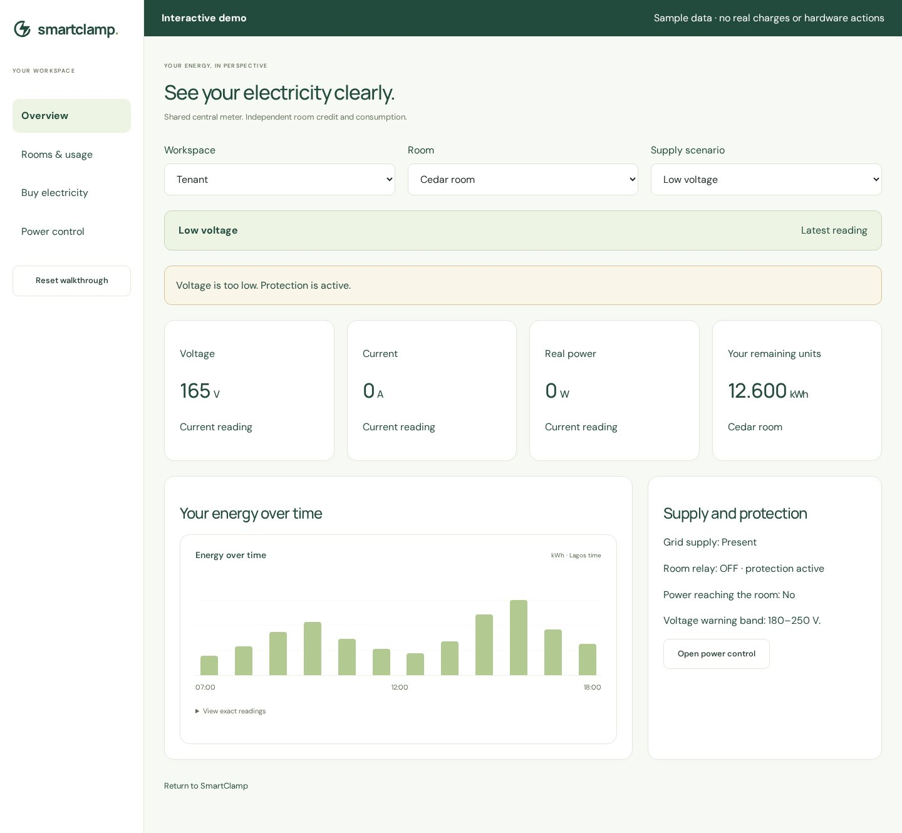
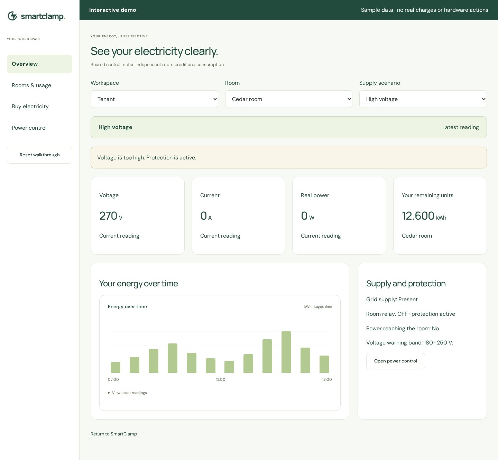
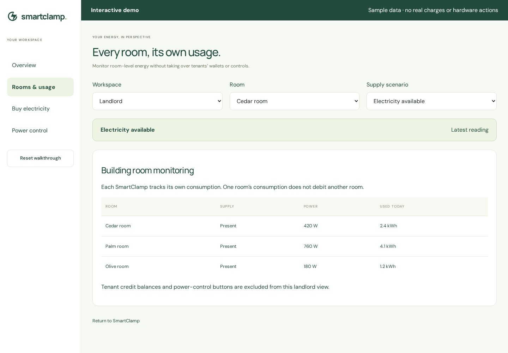
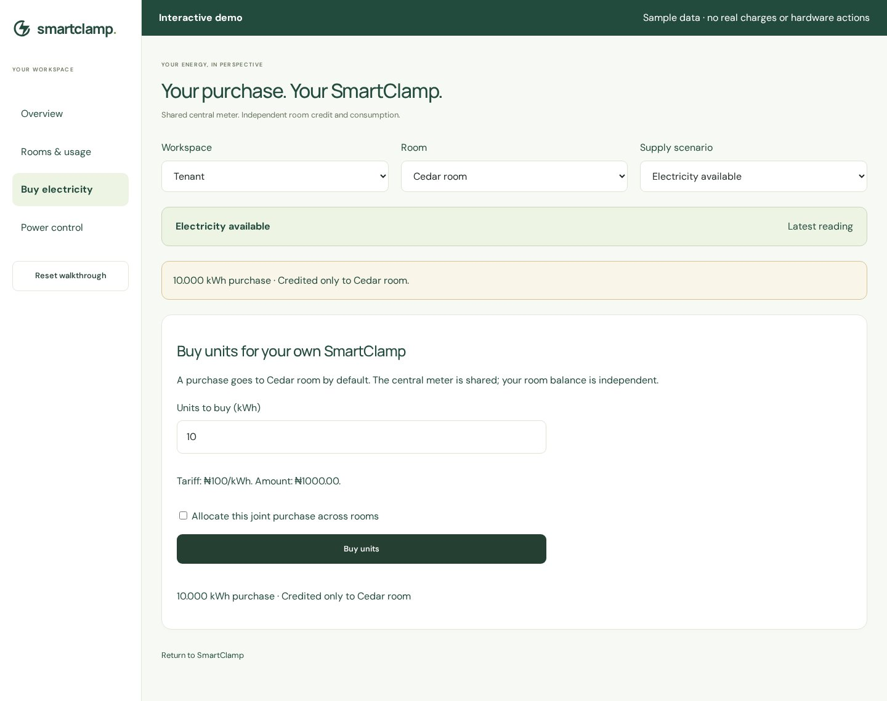
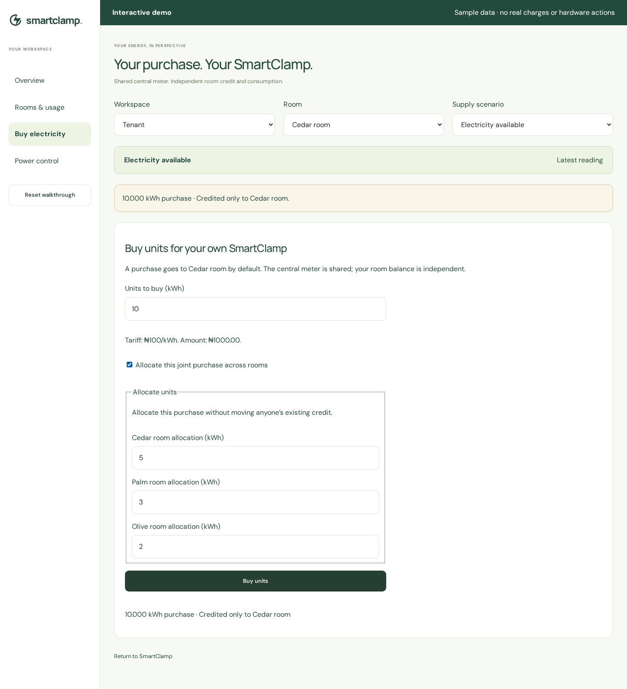
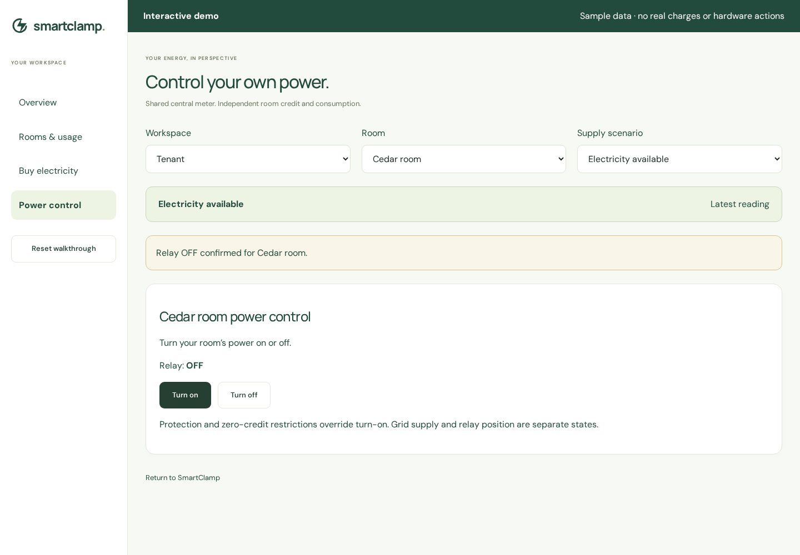
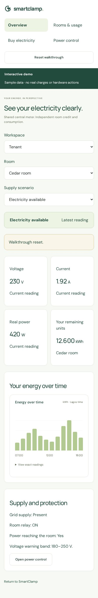

SmartClamp investor demo screenshotsSupply present, voltage, current, real power and independent room credit

Electricity absent: grid supply and relay position are different

Low-voltage warning with simulated protection

High-voltage warning with simulated protection

Landlord monitoring of three rooms; no tenant wallet spending or switching authority

An individual tenant purchase credits only that tenant’s SmartClamp

Optional joint-purchase allocation concept; production flow not implemented

Power control

Phone-sized dashboard
